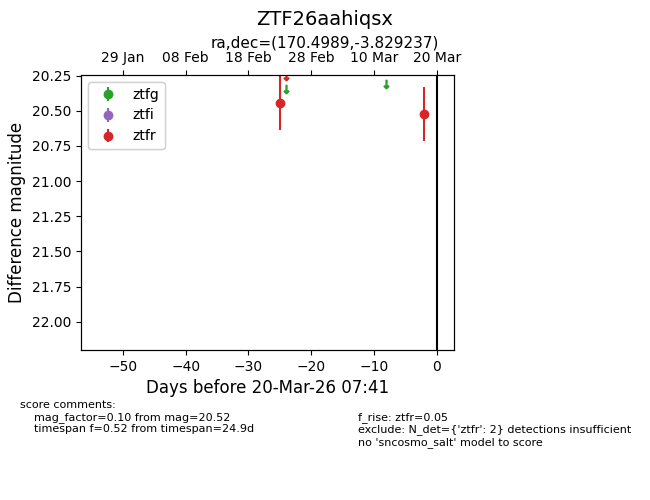
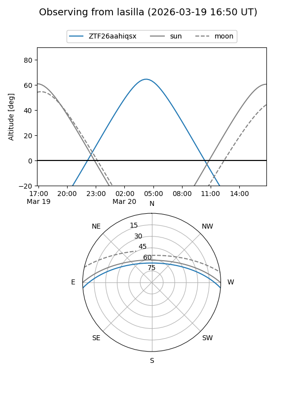
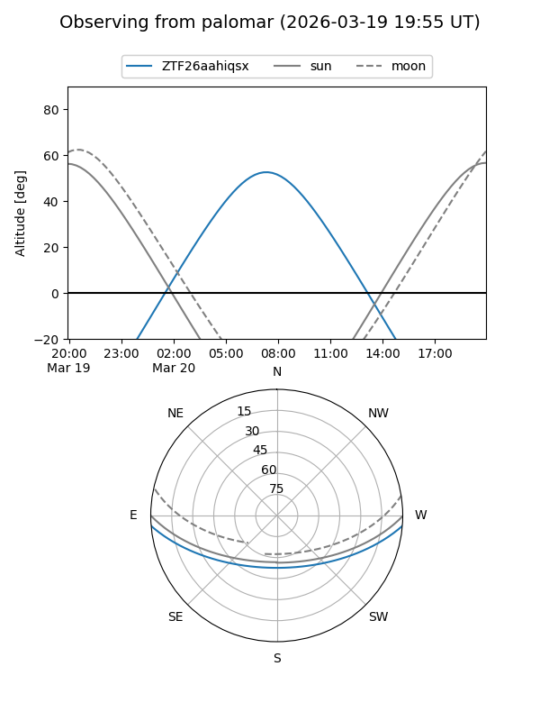

ZTF26aahiqsx
Target ZTF26aahiqsx at 2026-03-20 07:43
Aliases and brokers:
FINK: link
Lasair: link
ALeRCE: link
alt names
ZTF26aahiqsx (ztf,fink_ztf)
Coordinates:
equatorial (ra, dec) = 170.4989,-3.82924
equatorial (HMS+DMS) = 11:21:59.74,-03:49:45.25
galactic (l, b) = (264.6061,+52.25835)
Flags:
Photometry:
last ztfr=20.52
2 ztfr detections
Lightcurve

Visibility


Additional plots